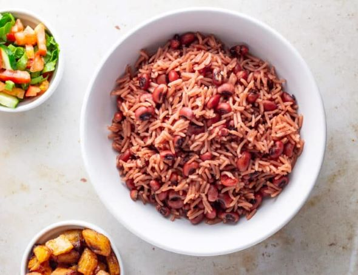

Waakye

Waakye, a dish made from beans and rice, is a familiar sight to most
Ghanaians. This simple, nutritious meal can be found on sale all over the
country, from restaurants to street food stalls. But how did it actually
come to be? Who makes the best jollof rice: Ghanaians or Nigerians? This
simple question forms the basis of the Jollof Wars, in which citizens of
these nations take to social media to debate whose rendition of this
originally Senegalese dish tastes best. Although there’s no actual fight,
the banter and jokes can get intense, with national pride at stake.
How to prepare Waakye
Ingredients
- Dried black eyed peas, soaked overnight – 1 cup
- White rice- 2 cups
- Dried millet stalk leaves – 10
- Water for cooking
- Salt to taste
Preparation
- Fill a pot with about 4 cups of water.
- Add the millet leaf stalks
-
Boil the water and millet leaf over high heat. The millet leaves will
begin to turn the water a deep red color.
- Rinse the soaked beans and add the boiling water.
-
Cover the beans let it cook until it is tender. Add water by the cup if
the beans dry out before they are soft
-
Rinse the rice until the water is clear and add to the soft beans.
- Add the salt and more water if needed.
-
Stir the pot and replace the cover. Lower the heat and simmer the rice
until it is cooked thouroghly and all the water has absorbed.
- Turn off the heat and let the pot rest for 5 minutes.
- Remove the millet leaves fluff the rice and beans with a fork.
Back to Homepage